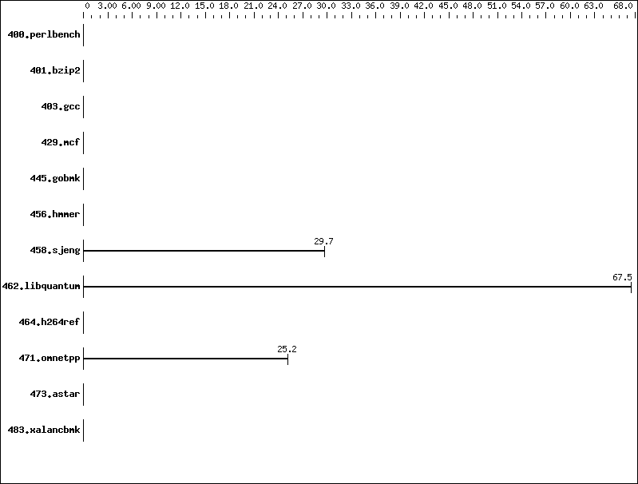

Invalid SPEC® CINT2006 Result
Copyright 2006-2008 Standard Performance Evaluation Corporation
Tyan
Tyan Thunder KKQS Pro (S4882)

'reportable' flag not set during run
471.omnetpp (base) did not have enough runs!
456.hmmer (base) did not have enough runs!
445.gobmk (base) did not have enough runs!
458.sjeng (base) did not have enough runs!
429.mcf (base) did not have enough runs!
473.astar (base) did not have enough runs!
483.xalancbmk (base) did not have enough runs!
400.perlbench (base) did not have enough runs!
464.h264ref (base) did not have enough runs!
462.libquantum (base) did not have enough runs!
401.bzip2 (base) did not have enough runs!
403.gcc (base) did not have enough runs!
456.hmmer (base) had invalid runs!
473.astar (base) had invalid runs!
483.xalancbmk (base) had invalid runs!
Run of 456.hmmer (base) was not valid; status is CE
Run of 473.astar (base) was not valid; status is CE
Run of 483.xalancbmk (base) was not valid; status is CE
Unknown flags were used! See
http://www.spec.org/cpu2006/Docs/runspec.html#flagsurl
for information about how to get rid of this error.
400.perlbench: -DSPEC_CPU_LINUX_IA32
462.libquantum: -DSPEC_CPU_LINUX
C base flags: -O2
C++ base flags: -O2
Fortran base flags: -O2
| 458.sjeng: |
"/home/shr/Code/zerocost/Sandboxing_NaCl/native_client/toolchain/linux_x86/pnacl_newlib_raw/bin/clang -m32 -Wl,--allow-multiple-definition -DNACL32BUILD -target i686-nacl" (in CC)
"/home/shr/Code/zerocost/Sandboxing_NaCl/native_client/toolchain/linux_x86/pnacl_newlib_raw/bin/clang -m32 -Wl,--allow-multiple-definition -DNACL32BUILD -target i686-nacl" (in LD)
"-O2" (in COPTIMIZE)
|
| 462.libquantum: |
"/home/shr/Code/zerocost/Sandboxing_NaCl/native_client/toolchain/linux_x86/pnacl_newlib_raw/bin/clang -m32 -Wl,--allow-multiple-definition -DNACL32BUILD -target i686-nacl" (in CC)
"/home/shr/Code/zerocost/Sandboxing_NaCl/native_client/toolchain/linux_x86/pnacl_newlib_raw/bin/clang -m32 -Wl,--allow-multiple-definition -DNACL32BUILD -target i686-nacl" (in LD)
"-O2" (in COPTIMIZE)
|
| 471.omnetpp: |
"/home/shr/Code/zerocost/Sandboxing_NaCl/native_client/toolchain/linux_x86/pnacl_newlib_raw/bin/clang++ -m32 -Wl,--allow-multiple-definition -DNACL32BUILD -target i686-nacl" (in CXX)
"/home/shr/Code/zerocost/Sandboxing_NaCl/native_client/toolchain/linux_x86/pnacl_newlib_raw/bin/clang++ -m32 -Wl,--allow-multiple-definition -DNACL32BUILD -target i686-nacl" (in LD)
"-O2" (in CXXOPTIMIZE)
|